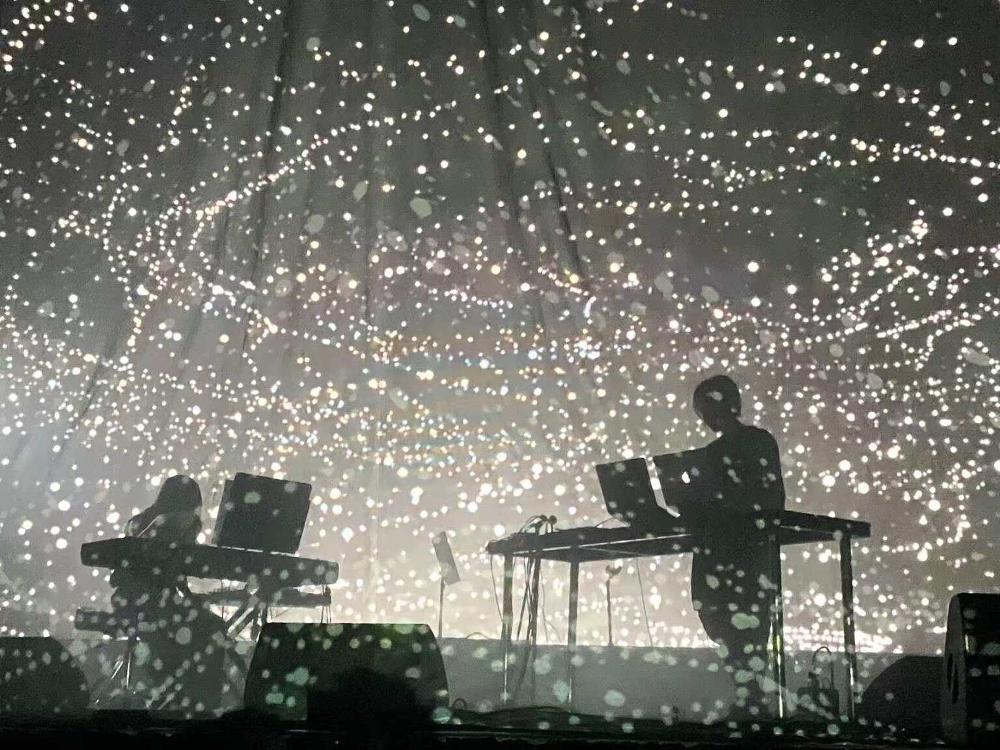
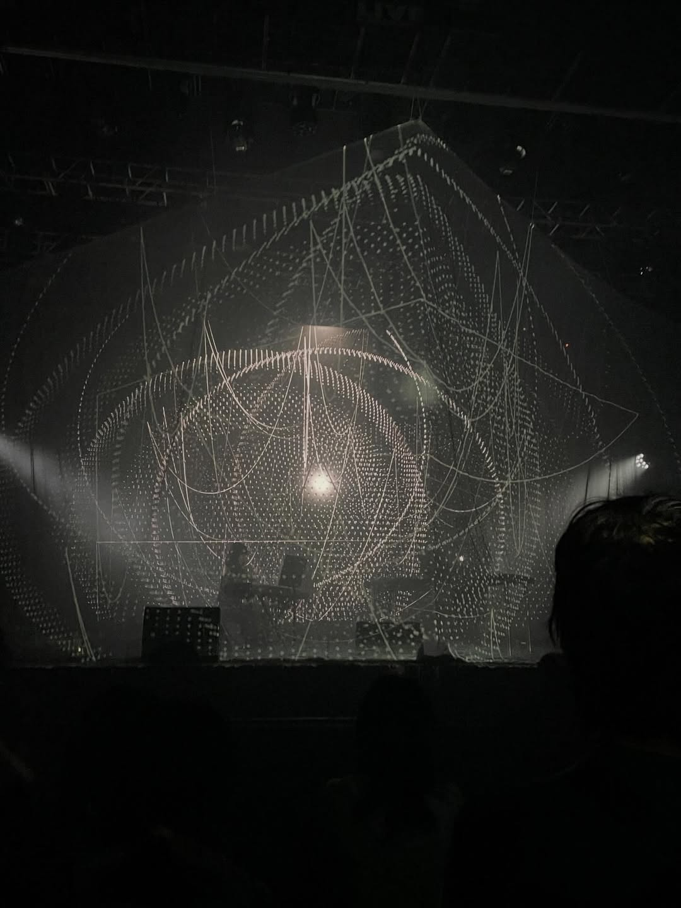

Overview / 项目简介
为 KASHIWA Daisuke 与 Yuki Murata 的现场演出定制视觉系统，连接舞台预演、音频分析、实时画面与现场技术支持。
Stage
以演出空间与屏幕比例为基础完成舞台预演
Realtime
音频分析驱动控制，结合实时响应与预渲染框架
Delivery
演出内容定制、现场视觉制作与技术支持
Selected Media / 项目图片
现场图呈现音乐人、视觉内容与舞台空间之间的关系；海报保留正式活动信息。




System / 系统
Sound into image.
系统把音频分析结果映射到视觉参数，并以预渲染结构保证叙事和画面完成度。现场控制用于响应音乐动态，同时维持舞台输出的稳定性。
Credits / 项目署名
- Title
- 机械光合：TITAN 的全息声林 / TITAN: A Holographic Sound Forest
- Artists
- KASHIWA Daisuke × Yuki Murata × Ewan Qian
- Venue + Date
- BO LIVE 前海店，深圳 · 2025.10.21
- Ewan Qian
- Visual Artist / Live Visual Production
- VIRTURA Role
- 视觉系统、舞台预演、音频分析、现场视觉制作与技术支持